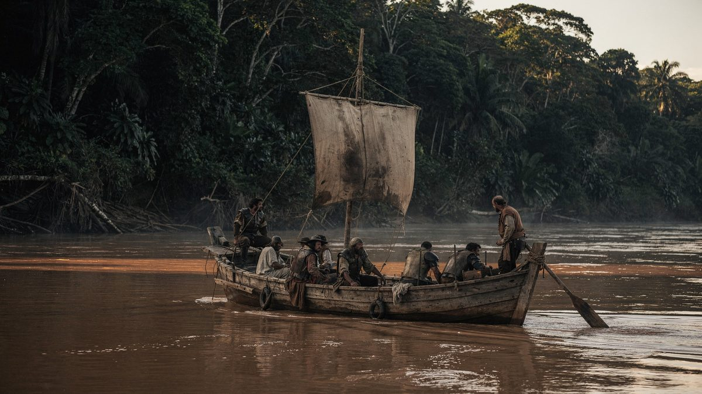
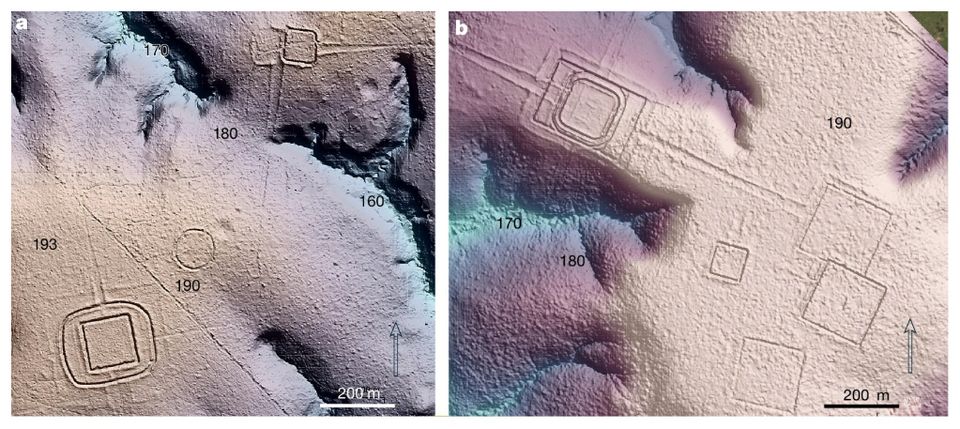
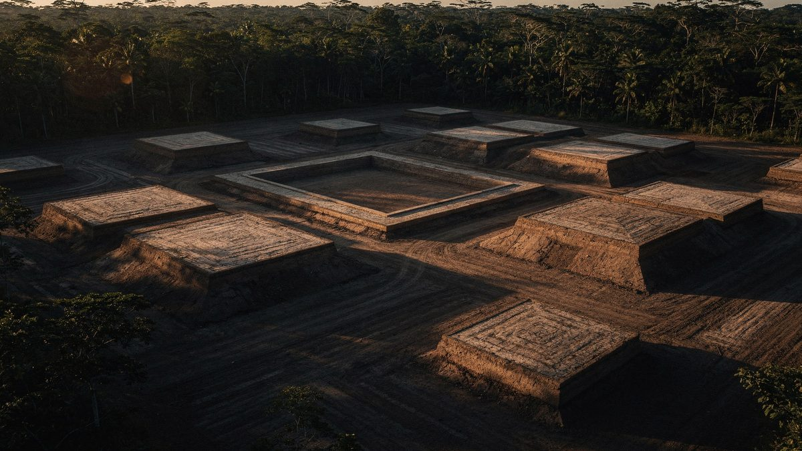
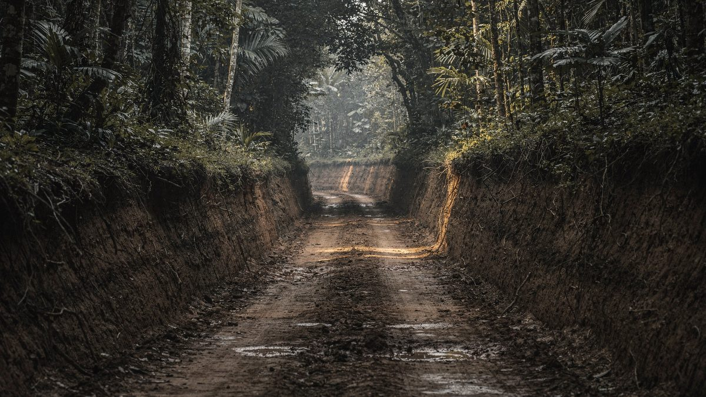
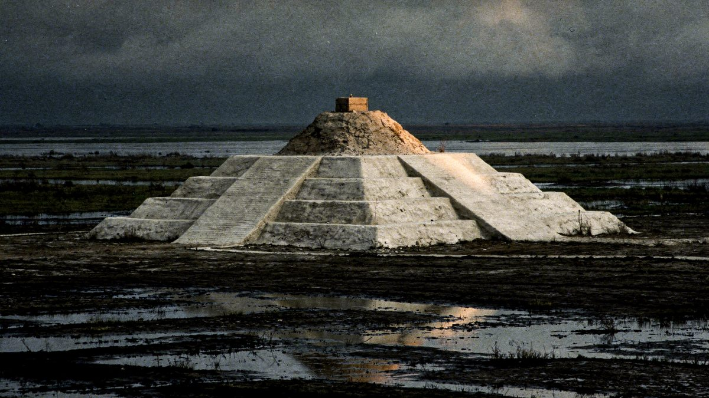
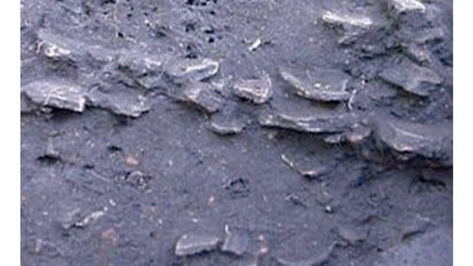
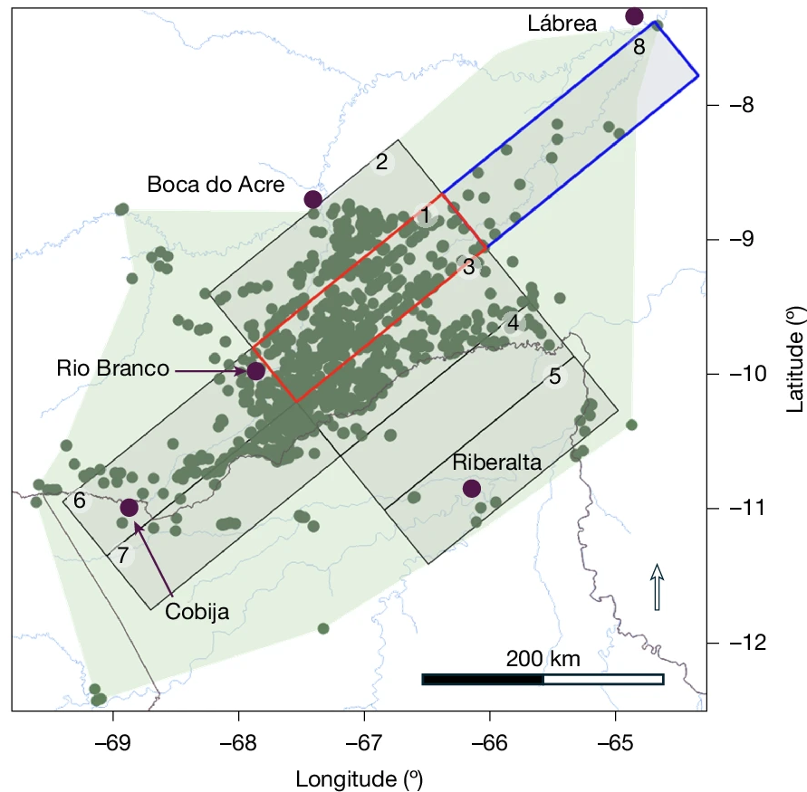
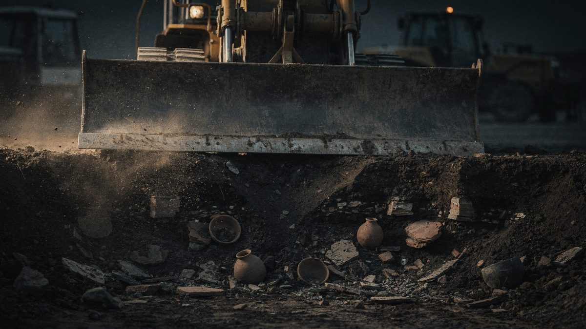

Amazon cities revealed by laser
For nearly a century archaeology held that the forest could not support cities, and it had a proof that seemed definitive: no one had ever found a single ruin. The proof had a flaw — it depended on someone being able to see the ground.
- Where
- Upano · Mojos · Acre · Xingu
- Period
- c. 500 BC – AD 1400
- Technique
- Airborne lidar
- Basin scanned
- < 1%
- Projected structures
- 24–30 thousand in the southwest (432 mapped in flight)
- Status
- Survey under way
In 1542, a starving crew was going down a river it could not name. Francisco de Orellana had left Quito in search of cinnamon and gold, had split off from the main expedition and was now following the current because going back against it was impossible. Friar Gaspar de Carvajal was on board, writing. And what he described in those pages was not an empty forest. It was riverbanks populated for league after league, villages packed one against the next, paths running inland, fine pottery, too many people to count.

Carvajal's account was read for four hundred years as what it seemed to be: a castaway's exaggeration. There was reason for suspicion — the same text describes warrior women, and it was from them that the river got its name. If the chronicler invented the Amazons, why believe the rest?
When Europeans returned in numbers, a century later, there was nothing left that resembled it. Smallpox and measles had arrived before them, traveling up the rivers faster than any expedition. What they found were small, scattered groups, exactly as the theory predicted. The absence became proof.
01The counterfeit paradise
The thesis had a basis, and it is important to say so before taking it apart. The soil of the Amazon is, for the most part, poor. The tropical forest keeps almost all of its nutrient reserve in living biomass — in the trees themselves — and not in the earth. Once a stretch is cleared and the first plot planted, the ground is exhausted within a few years. It is a real limitation, measured in the field, not a prejudice.
In 1971, the American archaeologist Betty Meggers gave that limitation a name that stuck: counterfeit paradise. The lushness of the forest would deceive the observer; beneath it lay an environment incapable of sustaining dense populations. And from such an environment everything else would follow — small, mobile groups, with no stable hierarchy, no monuments.
The model dominated Amazonian archaeology for decades. It explained the available data, and the available data were, in large part, the absence of finds. The problem is that this absence had a trivial cause that no one weighed: under the closed canopy, visibility on the ground is a few meters. It is perfectly possible to cross a plaza of packed earth and write in one's notebook that one climbed a hill.
The Europeans were looking for stone, because stone was what they called civilization.
02The laser that goes through the tree
The instrument that changed the count is called lidar, and the principle fits in two sentences. An aircraft flies low and fires hundreds of thousands of laser pulses per second at the ground, recording how long each one takes to come back. A tree crown is not a wall: it is a sieve. Most pulses hit leaves, but a fraction slips through the gaps, touches the ground and returns.
The rest is processing. The software receives millions of returns, discards everything that came back from the vegetation and keeps only the last echo of each pulse — the one that came from the lowest point. From that a digital terrain model is built: the surface of the ground, with no forest on top.

Nothing in this method is exotic. Lidar has been used for decades in engineering and cartography. What changed was the cost of the flight and the capacity to process the volume of data — and, above all, someone deciding to point the equipment at stretches of forest that the theory said were empty.
03The Upano valley
On January 12, 2024, the journal Science published the result of one such survey over the valley of the Upano River, on the eastern foothills of the Ecuadorian Andes, in Morona-Santiago province. The team was led by the French archaeologist Stéphen Rostain, who had already been working in the region for more than twenty years — excavating, as it happens, some of those platforms without being able to see the whole they were part of.
The terrain model brought out some six thousand earthen platforms spread over approximately 300 km². They are not natural rises: they are regular rectangles, on average 20 by 10 meters in area and two to three meters high, built of earth that was carried in and tamped down. On each one stood a structure of wood and thatch that the climate erased; the platform remained.
They are not scattered at random. They cluster in groups around square patios, and the groups add up to neighborhoods. One of the platforms excavated at Kilamope measures 140 by 40 meters, a size that cannot be explained by a family dwelling. The occupation runs from about 500 BC to sometime between AD 300 and 600.

The streets that do not bend
What most unsettled the earlier reading, however, was not the platforms. It was the roads. The survey revealed roads dug into the terrain, with raised banks, the largest about ten meters wide — some reaching thirteen — and from ten to twenty kilometers long. The main axes run in a straight line, and one of them stretches for about 25 kilometers.
It is worth dwelling on this detail, because it is the one that carries the argument. A hunting trail bends: it goes around the outcrop, swerves past the thick tree, follows the stream. A road that runs straight for kilometers on end goes around nothing — it cuts through.
Three things follow from this, and none of them is small: someone defined the route before the first meter was opened; someone had enough authority to decide where it would pass, including over other people's land; and someone managed to gather and sustain the labor to dig it. Planned route, authority and coordinated work are, together, the minimum definition of political organization.

04The pyramids made of earth
Almost two years earlier, in May 2022, Nature had published an equivalent survey of the Llanos de Mojos, a floodplain in northern Bolivia. The team, led by the German archaeologist Heiko Prümers, of the German Archaeological Institute, with Carla Jaimes Betancourt, of the University of Bonn, mapped 200 km² of the area occupied by the Casarabe culture, which flourished between approximately AD 500 and 1400.
Two large settlements appeared, Cotoca and Landívar. Cotoca covers about 315 hectares, stretching a kilometer and a half from north to south. At its center, a stepped earthen platform with a conical structure on top: from the ground to the highest point, 22 meters — a seven-story building, made of carried earth. Around it, enclosures in concentric rings; leading out from it, raised causeways crossing the flooded plain in a straight line, and canals to move water and canoes.

Why no one saw it before
The question is inevitable: how does something 22 meters tall stay hidden? The answer lies in the material. A stone pyramid remains a stone pyramid — it endures, it reflects light, it shows on the horizon. An earthen pyramid, in a humid tropical climate, is a hill. Within a few years it is covered in grass; within a few decades it has a full-grown tree on top; in five centuries it is landscape.
Add to this the observer's bias. Whoever arrived looking for masonry wrote down forest while walking over urbanism. The mistake was not one of perception, it was one of category.
05The soil they manufactured
There is a second trace, and it is not monumental — it is underfoot. Scattered across the basin are patches of dark soil, far more fertile than the earth around them, which riverside dwellers call terra preta, black earth. It is not a natural formation. It is the residue of human occupation: charcoal, bone, potsherds, food scraps and waste, accumulated in the same place over centuries until they formed a new soil.
And here is the piece of evidence that dismantles the counterfeit paradise without denying its premise. These patches remain fertile to this day, centuries after those who produced them disappeared. The charcoal gives the soil a structure that holds nutrients instead of letting the rain wash them away.

Meggers was not wrong to say that Amazonian soil was poor. She was wrong to assume that people would accept the soil the way it came.
The argument has a living complement. Surveys of forest composition show that species useful to humans — Brazil nut, cacao, açaí, peach palm, among others — occur in concentrations that chance does not explain, and precisely in the vicinity of archaeological sites. In certain patches, the density is too high to be spontaneous. What is called untouched forest is, in large part, a two-thousand-year-old orchard that lost its gardener.
06The theories, from the most sober to the most improbable
Low-density urbanism
This is the reading that organizes practically all of the recent literature. These are not compact cities in the European or Mesoamerican manner: the pattern is one of dispersed residential cores, with fields, orchards and managed forest between them, linked by roads and organized around plazas and mounds. The term is not a concession — it describes an urban form with its own rules, also documented in Southeast Asia.
A city you can walk across in half an hour without leaving it and without ever losing sight of trees. It is not a smaller city: it is another idea of what a city is.
Oral memory was right, and was not treated as a source
In the Upper Xingu, the American archaeologist Michael Heckenberger worked for years with the Kuikuro. For generations they had described ancient villages larger than the present ones, linked by wide paths and organized around central plazas. This circulated as oral tradition — a respectable narrative, with no evidentiary value.
The excavations and the mapping, published in Science in 2003 and 2008, found in the ground what had been described: clusters of villages, wide roads, plazas. The information was never lost. It had been passed down all along by people whom the method did not classify as a source.
How many people lived there
This is the most open point in the dossier. For the Upano, one of the coauthors estimated at least 10 thousand people, perhaps 15 or 30 thousand at the peak; other readings circulated in the press spoke of tens, if not hundreds, of thousands. In July 2026, a study published in Nature by a team led by Martti Pärssinen, with Risto Kalliola and Alceu Ranzi, combined lidar flights and satellite imagery over some 183 thousand km² of the southwestern Amazon, with flights in Acre and Amazonas. It detected 432 earthen structures in the flights, 396 of them previously unknown, and projected for the region as a whole somewhere between 24 and 30 thousand, proposing for it the name Aquiry civilization and a population of 1.25 to 3 million people between AD 100 and 300.
The number is impressive and deserves the care that any such number deserves: it comes from a density model applied to mapped structures, not from a count. Population estimates in archaeology depend on how many people are assumed per dwelling unit and on how long the units are assumed to have been occupied at the same time — two assumptions that change the result by orders of magnitude. What the structures firmly support is their existence and extent; the population arithmetic remains under discussion.
The counterfeit paradise
Meggers' thesis is today a minority view, but discarding it entirely would be unfair and inaccurate. The basic observation — that Amazonian soil is poor and fertility lies in the biomass — remains correct. What fell was the inference: that an environmental limitation sets the ceiling of social complexity for those who live in it. Terra preta is the material counterevidence.
El Dorado, an Amazonian Atlantis, a lost advanced civilization
The temptation to read these finds as confirmation of the golden cities the colonial chroniclers were looking for is understandable and wrong. There is no gold, no masonry, no writing, no tool metallurgy. What exists is earth moved on an industrial scale, pottery, planned roads and forest management — things the peoples there did with the techniques they had, and which are enough.
The mystical version is less interesting than the fact, and it does a specific kind of damage: it transfers to an imaginary, vanished civilization the credit that belongs to the ancestors of peoples who are still alive and still fighting over the possession of that territory.
07Chronology
- c. 500 BCThe recorded occupation of the Upano valley begins, with the first earthen platforms.
- c. AD 100 – 300The period to which the 2026 study assigns the population peak of the southwestern Amazon.
- c. AD 300 – 600Abandonment of the Upano valley, possibly associated with the activity of the Sangay volcano.
- c. AD 500 – 1400The Casarabe culture flourishes in the Llanos de Mojos, with Cotoca and Landívar.
- 1542Francisco de Orellana's expedition goes down the river. Friar Gaspar de Carvajal describes densely populated banks.
- sixteenth – seventeenth centuriesEuropean epidemics travel up the rivers ahead of the Europeans. By the time the following expeditions arrive, the human landscape is already different.
- 1971Betty Meggers publishes Amazonia: Man and Culture in a Counterfeit Paradise. The counterfeit-paradise model becomes dominant.
- 2003 and 2008Michael Heckenberger publishes in Science the mapping of the Upper Xingu, confirming in the ground what Kuikuro tradition described.
- May 2022Prümers and team publish in Nature the lidar of the Llanos de Mojos: Cotoca, Landívar and the 22-meter platform.
- October 2023Vinicius Peripato and colleagues publish in Science the modeling that projects more than ten thousand earthen structures not yet located.
- January 2024Rostain and team publish in Science the Upano valley: six thousand platforms, 300 km² and a 25-kilometer road.
- July 2026Pärssinen, Kalliola, Ranzi and team publish in Nature the survey of the southwestern Amazon: 432 structures detected in flight and a projection of 24 to 30 thousand for the region.
08What remains open
Everything in this dossier came from a minimal fraction of the possible area. The Amazon basin covers more than six million square kilometers. The surface scanned by lidar to date, adding up all published surveys, does not reach one percent of it — the 2026 study, one of the largest so far, covered about 4,500 km² of flights over an area of interest of 183 thousand.
The honest formulation, then, is not that the cities of the Amazon have been discovered. It is that the ones lying under the first stretches where someone pointed the laser have been discovered. And in almost every stretch where they pointed it, they found something.

In October 2023, a team led by Vinicius Peripato tried to estimate the size of what is missing. Combining the existing surveys with environmental variables — temperature, rainfall, soil type, distance to water — the model projected somewhere between ten and twenty-four thousand earthen structures not yet located, with a central value of around sixteen thousand. It is a statistical projection, with the uncertainty that the interval itself declares. But the floor of the interval is already larger than everything cataloged in a century of fieldwork.

Three questions remain open, and none for lack of technology. How many they were — the population arithmetic depends on assumptions that change the result by orders of magnitude. How they governed themselves — planned routes and collective works point to authority, but do not say whether it was hereditary, rotating, religious or negotiated, and there is no writing to consult. Why they came to an end — in the Upano the volcano offers a local explanation; in Mojos and the southwest, the collapse predates European contact at a good share of the sites, and the cause remains unanswered.
What has changed for good is the starting point. The question is no longer whether there were cities in the Amazon but how many still lie under the ninety-nine percent that no one has mapped.
09Frequently asked questions
Were there lost cities in the Amazon?
Lidar surveys show planned settlements in the Upano valley, in Ecuador, and in the Llanos de Mojos, in Bolivia, with platforms, plazas, straight roads and canals. They are not compact cities in the European manner: the dominant reading is low-density urbanism, with fields, orchards and managed forest between the cores. See the theories.
How does lidar see the ground under the forest?
An aircraft fires hundreds of thousands of laser pulses per second; a fraction passes through the gaps in the canopy, touches the ground and comes back. The software discards the returns from the vegetation, keeps the last echo of each pulse and builds the terrain model with no forest on top. See the laser that goes through the tree.
What are the Acre geoglyphs?
Precolonial earthen structures in the southwestern Amazon, identified where the forest was cut down. In 2026, a study in Nature detected 432 of them in lidar flights, 396 previously unknown, and projected between 24 and 30 thousand for the region.
Why did no one see these cities before?
Under the canopy, visibility on the ground is a few meters, and an earthen pyramid in a humid tropical climate turns into a hill covered in forest. Whoever arrived looking for masonry wrote down forest. See the pyramids made of earth.
How many people lived in these Amazon cities?
It is disputed. For the Upano, one of the coauthors estimated at least 10 thousand people; for the southwestern Amazon, the 2026 study proposed 1.25 to 3 million. These are model figures, not counts, and the population arithmetic remains under discussion.
10Sources consulted
This dossier is original writing. The sources below were consulted to verify dates, measurements and attributions; none was reproduced.
- Rostain, S.; Dorison, A.; de Saulieu, G.; Prümers, H.; Le Pennec, J.-L.; Mejía Mejía, F.; Freire, A. M.; Pagán-Jiménez, J. R.; Descola, P. — Two thousand years of garden urbanism in the Upper Amazon. Science 383(6679), January 2024. DOI 10.1126/science.adi6317
- Prümers, H.; Jaimes Betancourt, C.; Iriarte, J.; Robinson, M.; Schaich, M. — Lidar reveals pre-Hispanic low-density urbanism in the Bolivian Amazon. Nature 606, May 25, 2022. DOI 10.1038/s41586-022-04780-4
- University of Bonn — press release Early urbanism found in the Amazon, May 25, 2022, on the Casarabe surveys.
- Peripato, V. et al. — More than 10,000 pre-Columbian earthworks are still hidden throughout Amazonia. Science 382(6666), October 2023. DOI 10.1126/science.ade2541
- Pärssinen, M.; Kalliola, R.; Ranzi, A. et al. — Over 20,000 precolonial earthworks in the Southwest Amazonia. Nature, published online July 29, 2026. DOI 10.1038/s41586-026-10835-7
- Heckenberger, M. J. et al. — Amazonia 1492: pristine forest or cultural parkland? Science 301(5640), September 2003. DOI 10.1126/science.1086112
- Heckenberger, M. J. et al. — Pre-Columbian urbanism, anthropogenic landscapes, and the future of the Amazon. Science 321(5893), August 2008. DOI 10.1126/science.1159769
- Meggers, B. — Amazonia: Man and Culture in a Counterfeit Paradise, 1971. It is the thesis this dossier contradicts.
- Levis, C. et al. — Persistent effects of pre-Columbian plant domestication on Amazonian forest composition. Science 355(6328), March 2017. DOI 10.1126/science.aal0157
- Koppe, M. — Des cités antiques en Amazonie. CNRS Le journal, January 18, 2024, on the roads and the eruption layers of the Upano valley.
- Rannard, G. — Huge ancient lost city found in the Amazon. BBC News, January 2024, on the platforms, Kilamope and the 25 km road.
- Associated Press — report on the mapping of the Upano valley cities, with an interview with Antoine Dorison on the population, January 12, 2024.
- Wikipedia, article “Upano Valley sites”, in English, consulted in October 2026, alongside the sources above.